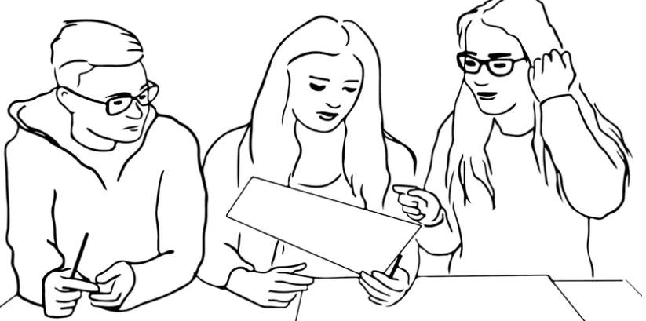

Experimental Studies
Session 08
Dr. K. Jonathan Klüser
Back to attendance
Last week: students who attend more get better grades
But motivated students attend more and study more
✋ What if we flipped a coin to decide who has to attend?
- Would you trust the result?
- Would it be allowed?
Are insured people healthier?
| Insured | Uninsured | Difference | |
|---|---|---|---|
| Health (1 = poor, 5 = excellent) | 4.01 | 3.70 | 0.31 |
| Years of education | 14.3 | 11.6 | 2.7 |
| Employed | 92% | 85% | 7 pts |
| Family income (USD) | 106,467 | 45,656 | 60,810 |
Married men, US National Health Interview Survey 2009 (AJ, Table 1.1)
✋ Does health insurance make people healthier?
Selection bias in words
Difference in group means = average causal effect + selection bias
- We need the insured’s health without insurance, but never see it (session 6)
- So the uninsured stand in. But they are poorer and less educated
- Selection bias: how much healthier the insured would be anyway
✋ In the NHIS: is the selection bias positive or negative?
Just randomize
RAND Health Insurance Experiment (US, 1974–1982)
- 3,958 people randomly assigned to one of 14 insurance plans
- From free care to catastrophic coverage (pay about 95% yourself)
✋ Why should a lottery fix the problem we just saw?
Let’s randomize this room
Treatment: born on an even day of the month
Control: born on an odd day
✋ Hands up in each group if you…
- commuted more than 30 minutes today
- have at least one sibling
- had coffee today
Are the two groups alike?
Checking for balance
| Before the experiment | Catastrophic | Free care | Difference |
|---|---|---|---|
| Female | 56% | 52% | −3.8 pts |
| Age | 32.4 | 32.8 | 0.4 |
| Years of education | 12.1 | 11.8 | −0.3 |
| Family income (USD) | 31,603 | 30,627 | −976 |
| General health index | 70.9 | 69.6 | −1.3 |
RAND Health Insurance Experiment (AJ, Table 1.3)
Remember the NHIS income gap: 60,810 USD
Why size matters
Flip a coin for two people: one gets insurance, one doesn’t
→ any difference could be who they are, not the insurance
With thousands of people, the group averages get closer and closer
→ law of large numbers
✋ Our room has about 24 people. How close were our two groups?
What RAND found
| After 3–5 years | Catastrophic | Free care | Difference |
|---|---|---|---|
| Doctor visits per year | 2.8 | 4.4 | +1.7 |
| Total health expenses (USD) | 636 | 921 | +285 |
| General health index | 68.5 | 67.7 | −0.8 |
| Mental health index | 75.5 | 75.9 | +0.4 |
RAND Health Insurance Experiment (AJ, Table 1.4)
✋ Free care: more doctor visits. Healthier?
What experiments can’t do
Back to the coin flip for attendance: why can’t we just do it?
- Ethics: you can’t keep students away from class, or deny people care
- Can’t be randomized: age, gender, democracy, war
- Cost: RAND ran for 8 years with almost 4,000 people
- People don’t comply: in Oregon’s insurance lottery, winning ≠ being insured
- External validity: does a US study from the 1970s tell us about Switzerland today?
Group exercise
In pairs, using your seminar questions:
1️⃣ Check your partner’s treatment and control groups: without randomization, would comparing them give the ATE?
2️⃣ Check your partner’s confounders: are they convincing? Can you add one?
3️⃣ Could your partner actually randomize the treatment? If not, why not?

Can you randomize a protest?
No. But you can randomize who walks past one
✋ What would be the treatment, the control and the outcome?
Up next: applied reading
Presentation by Chantal Hüsler and Nina Franziska Jäggi:
- Haas, V. I., Wappenhans, T., Geißler, F., Hartmann, F., Bischof, D., Giesecke, J., & Humphreys, M. (2024). Beyond Persuasion: Protest’s Direct Behavioral Impact on Bystanders. Working paper
Next session (22.10.26 - 16:00, room 4.B51)
Large-N observational studies
Basic reading: AJ, ch. 2 (pp. 47–81)
Presentation by Ibrahima Khalil Ndiaye and Ella Schertenleib: Ziblatt, Hilbig & Bischof (2024), Wealth of tongues

Thanks! 🙂
Backup: lab, survey or field?
Experiments differ in where and how real they are
- Lab: participants come to the researcher
- Survey: random variation inside a questionnaire (session 7’s LLM paper)
- Field: real people, real treatments, real settings (RAND; today’s paper)
✋ How “field” is a paid walk past a protest?

Masterseminar - Fall Term 2026